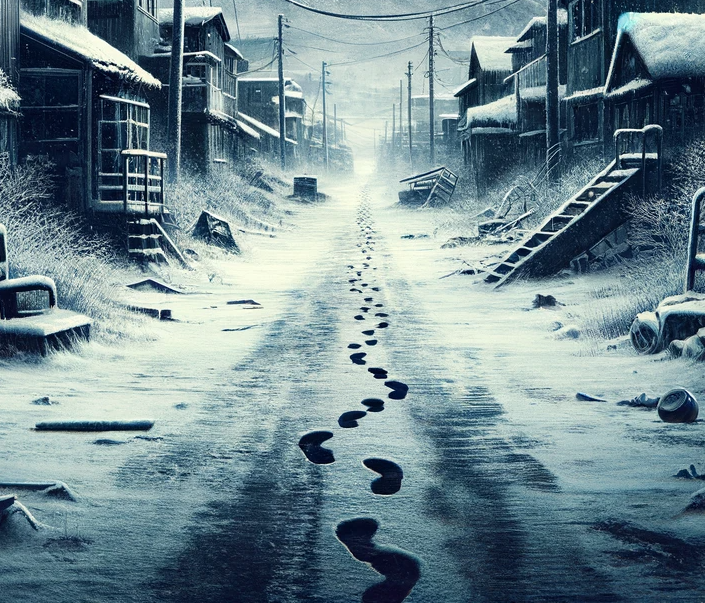

Setting: A desolate, snow-covered town.
Character: A middle-aged bureaucrat, intellectually rich but emotionally burdened.
Conflict: Battling with existential dread amidst a life perceived as hollow and routine.
Inciting Incident: Receipt of an anonymous, unsettling letter.
Content: A claim that a co-worker is on the brink of suicide due to despair.
Dilemma: The protagonist is torn between respecting privacy and the moral urge to intervene.
Dialogues: Discussions with peers yield a spectrum of philosophical views.
Result: These interactions only serve to deepen his existential crisis.
Effect: Growing detachment and a sense of encroaching dread.
Approach: He resolves to address the issue directly with his co-worker.
Revelation: The co-worker is bewildered, denying any knowledge of the letter.
Twist: This denial plunges the protagonist into a deeper confusion and suspicion.
Internal Struggle: He grapples with doubts about the letter and his sanity.
Quest for Truth: An attempt to trace the letter's origin, leading nowhere.
Clue: Minor anomalies in his daily life hint at an underlying enigma.
Exploration: Delving into past experiences and personal traumas.
Parallel: Identifying similarities between his life and the supposed plight of his co-worker.
Insight: He begins to see his existential dread as a manifestation of unresolved inner turmoil.
Unveiling: The letter is revealed to be a deliberate manipulation.
Perpetrator: An enigmatic figure with unclear motives.
Intent: Designed to push the protagonist towards a psychological brink.
Confrontation: A tense and unsettling meeting.
Exchange: Philosophical and psychological manipulation.
Revelation: The perpetrator's intent to induce despair and isolation.
Transformation: The protagonist's worldview darkens irreversibly.
Withdrawal: He becomes increasingly detached and cynical.
Action: Begins to mirror the despair he was initially trying to prevent.
Outcome: The protagonist succumbs to the dread he feared.
Reflection: A contemplation on the futility of seeking meaning.
Closing: A final scene depicting his surrender to existential despair, symbolizing the triumph of dread over hope.
